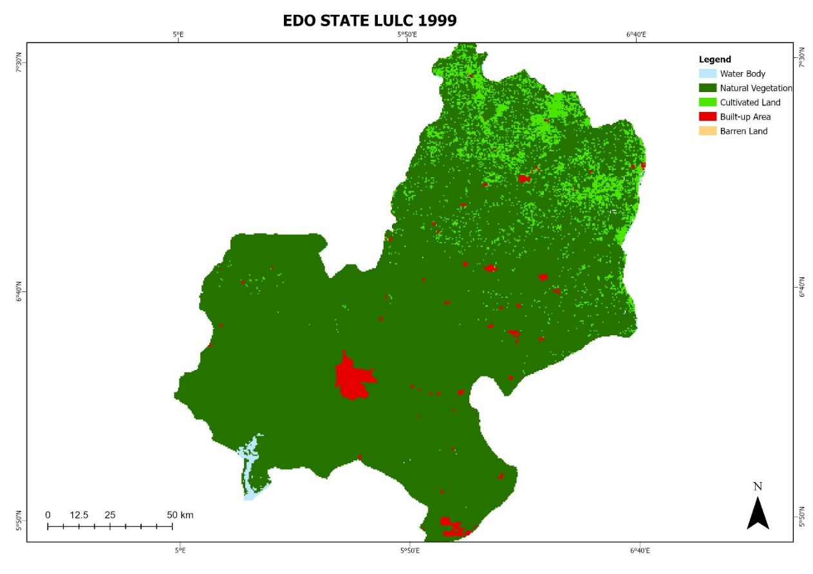
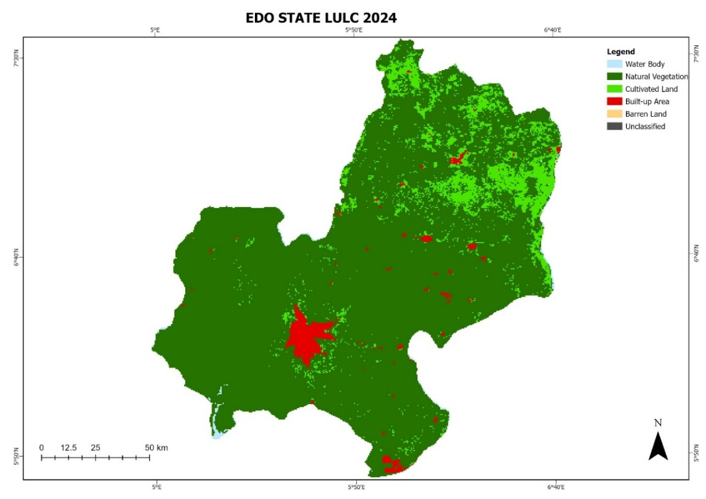

Overview
Edo State sits on valuable timber reserves and fertile farmland, and both are under pressure from a population that nearly doubled between 1999 and 2024. This assignment classified six Landsat-derived land cover snapshots across that period — Water, Natural Vegetation, Cultivated Land, Built-up Area, and Barren Land — then went past simple before/after maps to ask three harder questions: which land classes are converting into which others, how fragmented has the landscape become, and is population growth actually driving the urban footprint, or is something else going on.
The headline answer: built-up area grew 37% while population grew 96% — cities are densifying rather than just sprawling — and nearly all of that urban and agricultural growth came directly out of natural vegetation, which lost over 1,292 km² in the final five years alone after staying roughly stable for the previous twenty.
Data & method
All imagery and processing ran through Google Earth Engine's JavaScript API, with final cartography finished in ArcGIS Pro. The original brief called for data back to 1984, but the 1984–1994 Landsat archive over this part of Nigeria had cloud cover exceeding 45% — enough to misclassify cloud as barren land and cloud shadow as water or dense forest. That period was dropped in favor of a cleaner 1999–2024 window, screened to under 10% cloud using automated QA-pixel masking.
- Imagery — Landsat 5 (TM), Landsat 7 (ETM+), and Landsat 8–9 (OLI), restricted to peak dry season (January–March) to minimize seasonal vegetation noise, projected to UTM Zone 31N / WGS84.
- Training & classification — training polygons drawn from high-resolution Google Earth historical imagery, then classified with a Maximum Likelihood / Random Forest ensemble into the five thematic classes.
- Post-processing — a 3×3 majority filter to remove salt-and-pepper noise, followed by a 1999→2024 cross-tabulation to build the Markov transition matrix.
- Landscape metrics — six class-level structural metrics (class area, patch count, mean patch size, largest patch index, total edge, aggregation index) computed on the 2024 classification.
- Demographic cross-analysis — built-up area growth compared against NBS/NPC population estimates to derive a Land Consumption Coefficient for 1999 and 2024.

Where the change happened: 1999 vs. 2024


The numbers behind the maps
Area by land cover class at each five-year epoch, with the net change across the full 25-year study period:
| Class | 1999 | 2004 | 2009 | 2014 | 2019 | 2024 | Net change |
|---|---|---|---|---|---|---|---|
| Water Body | 121.75 | 61.50 | 167.75 | 158.50 | 36.50 | 107.94 | −11.34% |
| Natural Vegetation | 17,682.50 | 18,084.75 | 18,183.25 | 18,431.75 | 18,473.00 | 17,180.96 | −2.84% |
| Cultivated Land | 1,485.50 | 1,142.25 | 921.00 | 655.75 | 677.00 | 1,916.45 | +29.01% |
| Built-up Area | 328.00 | 331.25 | 345.50 | 367.50 | 398.25 | 449.49 | +37.04% |
| Barren Land | 1.50 | 0.25 | 1.75 | 1.75 | 0.00 | 1.80 | +20.00% |
Why it's changing, not just where
Two further analyses got at the mechanics behind the maps:
- Markov transition modelling — cross-tabulating 1999 against 2024 class membership shows natural vegetation has the highest retention probability of any class (P = 0.9098), but cultivated land has the lowest (P = 0.3720) — it has a 61.5% chance of reverting to natural vegetation, consistent with traditional bush-fallow farming rather than permanent clearing. Built-up area sits in between (P = 0.6762), and its apparent 27% "loss" to vegetation is mostly edge-pixel misclassification where tree canopy overhangs roads, not actual demolition.
- Landscape structure — natural vegetation still forms a highly aggregated core (Aggregation Index 81.97%, Largest Patch Index 81.97%), but it's carrying a massive Total Edge of 9.5 million metres — a measurable signature of fragmentation along the forest–farmland boundary. Cultivated land and built-up area, by contrast, have very low aggregation (6.82% and 1.15%), meaning new farms and buildings are popping up as thousands of small, scattered patches rather than expanding from one core — a "leapfrog" pattern that cuts into the forest matrix from many directions at once instead of one.
Population vs. built-up area: densification, not just sprawl
Edo State's population grew 96.28% over the study period (2,674,800 → 5,250,000, per NBS/NPC estimates) while its built-up footprint grew only 37.04%. Dividing the two gives the Land Consumption Coefficient — land consumed per person — which fell from 1.226×10⁻⁴ km²/person in 1999 to 0.856×10⁻⁴ km²/person in 2024. In plain terms: Edo's cities are packing in more people per square kilometre than they used to, rather than purely sprawling outward. That's good news for farmland and forest at the margins, but it also means aging drainage, power, and transit infrastructure in places like Benin City, Ekpoma, and Auchi is now serving far more people than it was designed for.
Five cities, five growth patterns
Urban expansion didn't look the same everywhere in the state — each major city grew along a distinct geographic logic:
- Benin City — axial radiating growth outward from the historic core along three highway corridors (Auchi, Asaba, Ore-Lagos roads).
- Auchi — a linear corridor squeezed along the north–south highway by surrounding hills and ridges, driven by quarrying and student housing near Auchi Polytechnic.
- Ekpoma — an institution-led cluster radiating from Ambrose Alli University, with aggressive infill between older plots.
- Uromi — a hub-and-spoke pattern radiating from its market core along main roads.
- Ikpoba-Okha / Ovia corridors — an industrial belt pulled south toward river ports and oil palm processing infrastructure.
What's driving it
Three forces stand out: direct demographic pressure on housing and infrastructure; institutional de-reservation of protected forests (Okomu, Ehor, Gele-Gele, Sakponba) opening land to commercial oil palm and rubber concessions; and logging roads cut for valuable timber (mahogany, opepe, afara) that then give smallholder farmers new access into previously closed forest interior.
What I'd do differently
Use SAR to penetrate the cloud cover and get better imagery. Optical sensors are exactly why the 1984–1994 period had to be dropped in the first place — radar wouldn't have that problem, and pairing it with the existing Landsat record could plug that gap instead of leaving it out entirely.